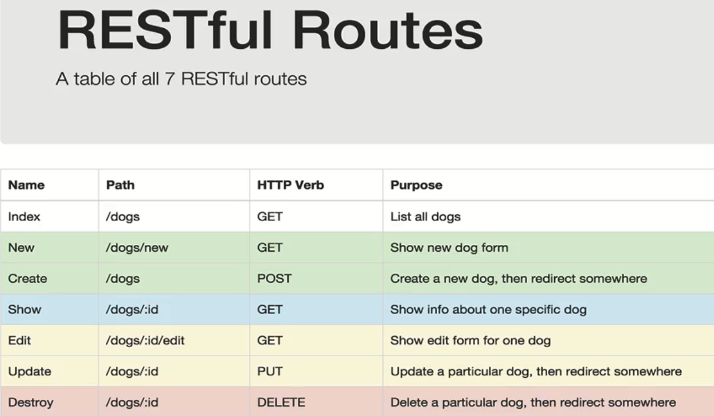

NodeJs
Reference:
Руководство по Node.js:
Installation:
NodeJs Essentials
NodeJs Basics
NodeJs allows computer to run JavaScript in a server, which is outside of the browser(it has a javascript engine V8).
- enter node mode in terminal:
node; - check function in node:
global.functionName, e.g.:global.setTimeout; - exit node:
process.exit(); - run script in node:
node script.js; - get directory name:
__dirname -
import/export modules
-
using the CommonJS old way:
-
created by ourselves modules
-
export variable:
module.exports = {property: value}, e.g. in script2.js file:module.exports = {largeNumber: largeNumber}moduleis a global object that we have access to(global.module). It hasexportsempty object property:Module { id: '<repl>', path: '.', exports: {}, filename: null, loaded: false, children: [], paths: [ . . . ] }We can add to this object any entities we want like variables, functions, objects etc. so they become availabe through this object in the file where this object imported(as a global object) to.
-
import variable:
require(), e.g. in script.js file:const script2 = require('./script2')andconst script2here is the name(which can be whatever we want) of the imported global objectrequire('./script2) - use imported variable:
importName.variableName, e.g. in script.js file:const a = script2.largeNumber
-
-
built-in modules
- import only:
require('moduleName')
- import only:
-
npm modules
-
import only: like built-in modules or by setting configuration in package.json file, e.g.:
"scripts": { "start": "nodemon server.js" }
-
-
-
using ES6 new way:
in order to be able to use this way we need either change the extension of each .js file to .mjs or insert
"type": "module"line into the package.json file
-
-
JSON.stringify()converts JavaScript objects into strings. When sending data to a web server the data has to be a string.
NodeJs built-in modules
These modules come already pre-installed with Node.
File System module
Allows operations with a file.
require('fs')
-
read file content
fs.readFile/readFileSync('filePath', (err, data) => {...})const fs = require('fs'); // async with call back function: read code line by line and after finish reading file content, will callback to pass the data to the function fs.readFile('./hello.txt',(err,data)=>{ if (err) { console.log('err!!')} console.log('1',data.toString()) // need to have encoding by toString('ENCODING'), default ENCODING is 'utf8' wich cover many languages }) // sync, only read the next line if this line finished, so for large file, the program need to wait long time until it finish to continue const file = fs.readFileSync('./hello.txt') console.log('2',file.toString()) // output 2 1 -
add text to the file(create a file in advance if it did not exist)
fs.appendFile('filePath', 'Content', err =>{...}) -
create text file and write to it
fs.writeFile('filePath', 'Content', err => {...}) -
delete file
fs.unlink('filePath', err => {...})
Http module
Allows build a server.
require('http')
Simple example of building a server written inside server.js file:
const http = require('http');
const server = http.createServer((request, response) => {
console.log('headers', request.headers);
console.log('method', request.method);
console.log('url', request.url);
const user = {
name: 'John',
hobby: 'Skating',
}
response.setHeader('Content-Type', 'application/json');
response.end(JSON.stringify(user));
})
server.listen(3000);
NodeJs useful npm modules
Nodemon module
Allows changing in js file reflect in terminal instantly.
npm install nodemon --save-dev or npm install -D nodemon
"scripts": {
"start": "nodemon server.js"
}
Express.js library
Express.js Essentials
Express.js Basics
A node.js library to help build a server.
npm install express
Define server using just this 3 lines of code:
const express = require('express');
const app = express();
.
.
.
app.listen(3000); // port
Express.js routing and RESTful API
Routing:
Express relies on routing to determine how an application responds to a client request to a particular endpoint, which is a Uniform Resource Identifier (or path) and a specific HTTP request method (e.g., GET, POST, etc.). Each route can have one or more handler functions, which are executed when the route is matched.
Routes follow the syntax below:
app.METHOD(PATH, HANDLER) e.g. app.get('/', (req, res) => {...})
- app(
app) is an instance of Express -
METHOD(
.get) is an HTTP request method(GET, POST, PUT, DELETE etc.), in lowercaseNote
- Everything entered into the adressbar will always be a GET request.
- POST method can be used with a
fetch()call or within a html form by definingmethod="post". - All other methods can be accessed programmatically only. GET and POST can be accessed programmatically too.
- Programmatically means using terminal or e.g. using Postman - a tool for API Development and testing server before connecting to front-end.
-
PATH(
'/') is a path on the server - HANDLER(
(req, res) => {...}) is the function executed when the route is matchedreq(Request) andres(Response) are actually objects (and can be named whatever we want, although req and res are conventions).- "Request" is an object containing all the information about the request that was made and which triggered the route.
- "Response" is an object containing all of the data that the server is going to respond with.
RESTful API:
-
An API that defines a set of functions which developers can perform: requests and receive responses via a HTTP protocol using methods such as GET, POST, PUT, DELETE and it uses these methods as follows:
- GET to receive a resource
- POST to create a resource
- PUT to change the state or update a resource
- DELETE to remove a resource
-
REST APis are stateless - meaning that calls can be made independently of one another and each call contains all the data necessary to complete itself successfully. A server doesn't need to keep memorizing things, i.e. each request that comes in has enough information that the server can respond with, so each request sent to a server is a independent property of the "Request" object.
-
The most used properties of Request object:
-
req.queryuse in GET request, e.g.
localhost:3000/?name=andrei&age=31. ? is for query -
req.bodyuse in POST request with middleware(like bodyparser or new express.js methods passed through the genereic app.use() middleware) to receive data(urlencoded or json) sent in request body, e.g
req.body.email -
req.headersuse in GET request to get all headers and the input
-
req.paramsuse in GET request to get the parameters in the url(e.g. localhost:8000/12345), e.g.
app.get('/:id',(req,res)=>{const {id} = req.params}),app.get('/:id',(req,res) => console.log(req.params)
-
-
The most used properties of Response object:
-
res.send(), e.g.app.get('/',(req,res) => res.send('getting root') -
res.status(), e.g.res.status(404).send('not found')to set the response status of the request
-
-
RESTful routing can be described as an architectural style(an approach to communications) that provides a map between HTTP verbs (e.g., GET, POST, etc.) and CRUD (create, read, update, delete) actions. There are seven RESTful route conventions:

Express.js Middleware
Note
Middleware is a type of computer software that provides services to software applications beyond those available from the operating system. It can be described as "software glue"(Wikipedia).
-
app.use()- generic Express middleware(универсальное промежуточное программное обеспечение). It receives ahead of time before we get to the routes, the request, modifies it and then passes thenext()callback function to keep it going and "trickle down" the modifiyed request to apt.get/post/put/delete etc.app.use((req,res,next) => { console.log() next(); // allow express to run after this }) -
In order to get
req.body(the body of our request, e.g. form data that user submitted through the<form></from>tag using POST method OR raw JSON data that was sent in the request body) we can use the body-parser(npm) middleware(the old way) or the express built-in methods(the new way):// the old way const bodyParser = require('body-parser'); app.use(bodyParser.urlencoded({extended: false})); // to get the form input app.use(bodyParser.json()); // to get JSON data sent in the request body // the new way app.use(express.urlencoded({extended: false})); // to get the form input app.use(express.json()); // to get JSON data sent in the request bodyNote
The above middleware packages, already implement the
next()within them. We only add thenext()when we implement our own middleware. -
To serve static assets, i.e. index.html, css file and js file we put'em in the public folder within our project folder and get Express to send these file using its following middleware:
app.user(express.static(__dirname + '/public'))So the server(server.js file) that serves simple static assets will look like this:
const express = require('express'); const app = express(); app.use(express.static(__dirname + '/public')) app.listen(3000); -
CORS(mdn) - to allow cross-origin request we use following npm package:
npm install corsby calling it through generic Express.js middleware, e.g.:const express = require('express'); const app = express(); app.user(cors()) app.listen(3000);
Connect frontend to backend
// code from Signin.js react component of face-recognition-brain app
onSubmitSignIn = () => {
fetch('http://localhost:3000/signin', {
method: 'post',
headers: { 'Content-Type': 'application/json' },
body: JSON.stringify({
email: this.state.signInEmail,
password: this.state.signInPassword,
})
})
// get the response from server: res.json()
.then(response => response.json())
.then(user => {
if (user.id) { // does the user exist? Did we receive a user with a property of id?
this.props.loadUser(user);
this.props.onRouteChange('home');
}
})
}
Knex.js library
SQL query builder library for Postgres, MSSQL, MySQL, MariaDB, SQLite3, Oracle, and Amazon Redshift.
Reference:
Installation:
- instal postgreSQL database package:
npm install pg - install knex:
npm i knex
Connect server to database(code from server.js file):
const db = knex({
client: 'pg',
connection: {
host: '127.0.0.1',
user: 'tms',
password: '',
database: 'smart-brain'
}
});
// signin by checking password match in login table and return user info in users table
app.post('/signin', (req, res) => {
db.select('email', 'hash').from('login')
.where('email', '=', req.body.email)
.then(data => {
const isValid = bcrypt.compareSync(req.body.password, data[0].hash)
if (isValid) {
return db.select('*').from('users')
.where('email', '=', req.body.email)
.then(user => {
res.json(user[0])
})
} else {
res.status(400).json('wrong credentials')
}
})
.catch(err => res.status(400).json('unable to get user'))
})
// transaction + insert into two tables with foreign key
app.post('/register', (req, res) => {
const { email, name, password } = req.body
const hash = bcrypt.hashSync(password, 10)
db.transaction(trx => { // we create a transaction when we have to do more than two things at once and thus we use transaction object 'trx' instead of 'db'
trx.insert({
hash: hash,
email: email,
})
.into('login')
.returning('email')
.then(loginEmail => {
return trx('users')
.returning('*')
.insert({
email: loginEmail[0],
name: name,
joined: new (Date),
})
.then(user => {
res.json(user[0]); // knex returns us an array of inserted to db rows, so we use here 'user[0]' and it only means, that we don't want to get it as an array, we want the response to be the object only instead
})
})
.then(trx.commit)
.catch(trx.rollback)
})
.catch(err => res.status(400).json('unable to register'))
})
// get data
app.get('/profile/:id', (req, res) => {
const { id } = req.params;
db.select('*').from('users').where({id}) // {id} - here we use ES6 object property declaration shortcut
.then(user => {
if (user.length) {
res.json(user[0])
} else {
res.status(400).json('Not found')
}
})
.catch(err => res.status(404).json('error getting user'))
})
// update/increment
app.put('/image', (req, res) => {
const { id } = req.body;
db('users').where('id', '=', id)
.increment('entries', 1)
.returning('entries')
.then(entries => {
res.json(entries[0]);
})
.catch(err => res.status(400).json('unable to get entries'))
})
****
app.listen(3000, () => {
console.log('app is running on port 3000...');
})
NPM (Node Package Manager)
Reference:
Installation:
NPM is installed with Node.js
Upgrading(according to official docs):
-
to the latest version:
npm install -g npm@latest -
to the most recent version:
npm install -g npm@nextNote
You may need to prefix these commands with
sudo, especially on Linux, or OS X if you installed Node using its default installer.
Common commands:
npm initcreate package.json file in your reponpm install packageNameonly install in a projectnpm install -g packageNamewill install globally, which can use in terminalnpm run builtcreate a optimized js file that can put on the internet--save-devmeans the dependencies only use in development by you- run command in
scripts:{}will look for file in.bin
Npm Essentials
Dependencies: package.json file
-
Created after runnung
npm init. Gets populated with git repo info, scripts and dependecies(locally installed NPM packages for our project)Note
Dependencies: a new person can install all dependencies when start the project by
npm install -
Script: run commands in a script by
npm run scriptNamee.g.:// first define new script in package.json file like this: "script":{ "build":"browserify script.js > bundle.js && live-server" }# then run it in terminal: npm run build -
Check the version of packages you need to update to: NPM Semver
Useful Npm packages
Lodash
npm install lodash
Live-server
npm install -g live-server
Browserify outdated - used for old browsers that doesn't support ES6 Modules
npm install -g browserify
// browserify syntax
var _ = require('lodash')
const array = [1,2,3]
console.log('answer',_.without(array,3)) //without is a function in lodash
# use broswerify to combine js files in terminal
browserify script.js > bundle.js
Bcrypt
npm install bcrypt
To securily store sensitive data like passwords we store it in hashes:
/*
* You can copy and run the code below to play around with bcrypt
* However this is for demonstration purposes only. Use these concepts
* to adapt to your own project needs.
*/
import bcrypt from 'bcrypt'
const saltRounds = 10 // increase this if you want more iterations
const userPassword = 'supersecretpassword'
const randomPassword = 'fakepassword'
const storeUserPassword = (password, salt) =>
bcrypt.hash(password, salt).then(storeHashInDatabase)
const storeHashInDatabase = (hash) => {
// Store the hash in your password DB
return hash // For now we are returning the hash for testing at the bottom
}
// Returns true if user password is correct, returns false otherwise
const checkUserPassword = (enteredPassword, storedPasswordHash) =>
bcrypt.compare(enteredPassword, storedPasswordHash)
// This is for demonstration purposes only.
storeUserPassword(userPassword, saltRounds)
.then(hash =>
// change param userPassword to randomPassword to get false
checkUserPassword(userPassword, hash)
)
.then(console.log)
.catch(console.error)
Note
United States National Institute for Standards and Technology (NIST) recommendations for password management:
- Password length: 8-64 characters
- Do accept both ASCII and UNICODE characters and encourage people to set long passwords with high entropy (upper case letters, lower case letters, digits, special characters).
- Don’t allow password hints.
- Avoid security questions.
- Use 2FA (2 factor authentication) if you want an extra layer of security in your application, but avoid using SMS as this can be easily hacked to have the attackers phone receive the confirmation code.
- Once the user has registered, there are two things to keep in mind:
- Don’t let the user know the password was incorrect when logging in. Instead, mention that the username and password combination is incorrect.
- The only time passwords should be reset by an administrator is when they suspect that an account has been compromised. Otherwise, passwords should only be reset by a user when he or she has forgotten their credentials.
Dotenv
npm i dotenv
As early as possible in your application, require and configure dotenv.
require('dotenv').config()
Create a .env file in the root directory of your project. Add environment-specific variables on new lines in the form of NAME=VALUE. For example:
PORT=3050
DB_HOST=localhost
DB_USER=root
DB_PASS=s1mpl3
process.env now has the keys and values you defined in your .env file.
const PORT = process.env.PORT || 3000
app.listen(PORT, () => {
console.log(`app is running on port ${PORT}...`);
})
const db = require('db')
db.connect({
host: process.env.DB_HOST,
username: process.env.DB_USER,
password: process.env.DB_PASS
})
Serve
npm i serve
Used to serve a static site, single page application or just a static file (no matter if on your device or on the local network).
In particular to serve a react spa pass this script into package.json "scripts": { "start": "serve -s build" }. This is the preffered way of deployment according to CRA(Create React App) documentation.
NPX (Execute NPM Package Binaries)
NPX it's a package runner tool that comes with npm 5.2+
NVM (Node Version Manager)
Allows to install multiple versions of NodeJs and change between them.